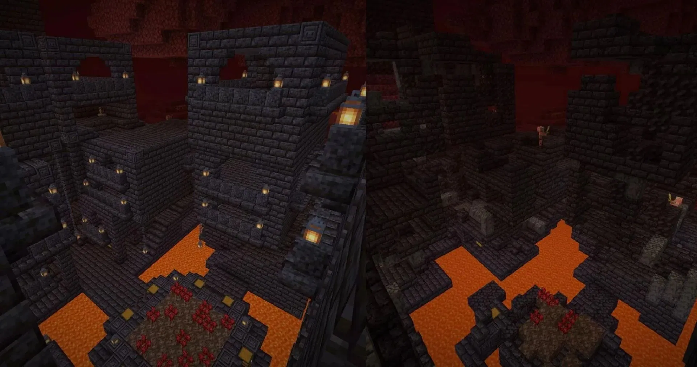
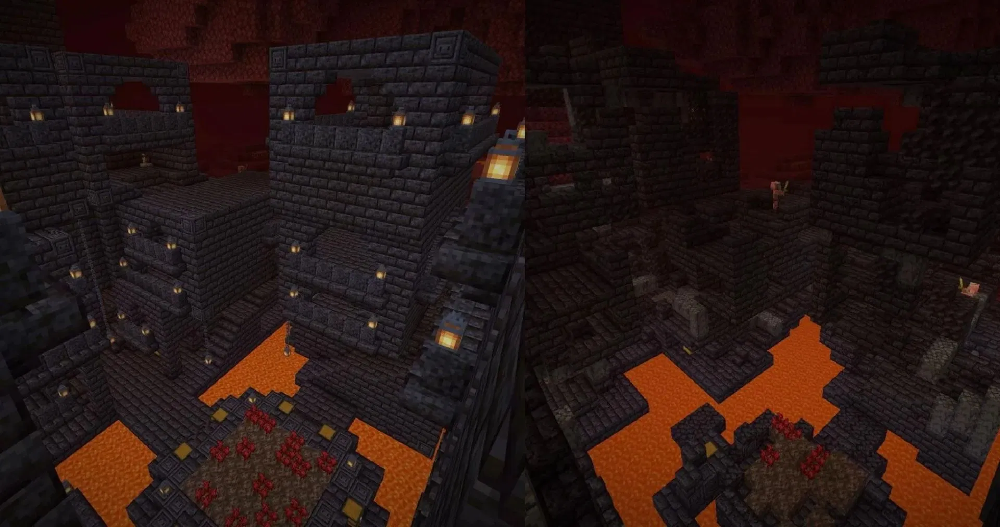

Biomes Of The Nether


 

The soul sand valley is very dangerous, with soul sand that slows you down, skeletons everywhere, and ghasts that shoot fireballs at you. You will find all of the soul sand you could ever need here, fossils that are made of bone blocks, and dried out ghasts which we will not go too in depth with, but are really neat. The danger scale is about a 7/10.
The blue fungal forest is full of blue wood from blue fungal trees. Blue and red is all you will see in this biome and if you need ender pearls, this is the place to go. Endermen spawn here and piglins are scared of blue mushrooms, so this biome lacks them. The danger scale of this biome is 3/10.
The badlands may be the ugliest part of the nether. You will find zombie piglins and regular piglins and striders. Zombie piglins will not attack you unless you attack them, regular piglins will attack you unless you are wearing gold armor, and striders can be ridden with a saddle. This is a great place to find quartz because of how barren it is. The danger score is 5/10.
The nether fortress is a necessity if you want to beat the game. It is full of blazes, skeletons, wither skeletons, and also chests with loot. You can find nether wart here which is used for potions, wither skulls to call in the wither boss, and blazes which drop blaze rods that are needed to get to the End. The danger scale is 10/10.
The red fungal forest is full of red fungal trees which give you red wood and it is full of piglins. Piglins are a nuisance, and you should wear gold armor to protect yourself and giant boars are everywhere so you have to watch your back. The danger scale is 8/10.
The radiation zone is one of the most dangerous places in Minecraft and you also have very little reason to go there. It is full of lava, magma cubes and ghasts. There is basalt and black cobblestone which are nice blocks but may not be worth coming to this biome to get. The danger scale is 10/10.
The bastian is very rare and a necessity if you want to fully upgrade your gear. Piglins swarm the fortress and unfortunately there is a special piglin that only spawns here that will make your gold armor useless. You will find the netherite trim which you will need to get netherite ingots. The danger scale is a 9/10.